Poor does not mean powerless.

New streets. New products. New alliances.
Housing, growth and image source
The building has not stopped.
North Korea announced the completion of 50,000 Pyongyang apartments in February 2026, concluding a five-year construction program. Yonhap's report.
The Bank of Korea estimated North Korean economic growth at 3.5% in 2025, after 3.1% in 2023 and 3.7% in 2024. Bank of Korea's July 2026 estimates.
Construction and output growth do not establish better living conditions.
Russia brings concrete benefits.
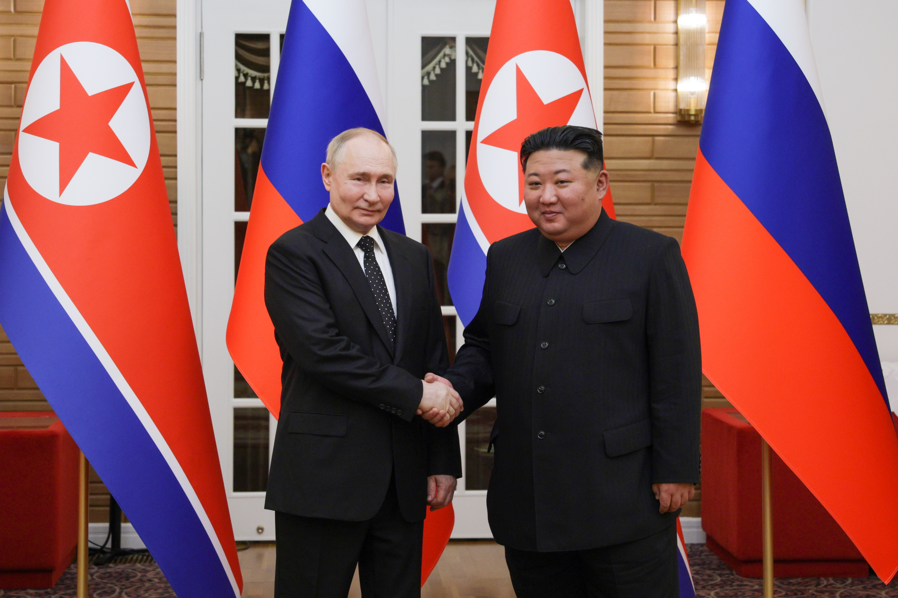
Fuel. Finance. Military technology. New routes.
The exchanges, treaty and photograph
Russia brings concrete benefits.
The June 2024 Comprehensive Strategic Partnership treaty formalized a relationship with concrete exchanges. North Korea supplies arms and troops for Russia’s war against Ukraine. Pyongyang gains resources and support in return.
- Fuel & finance
- Oil shipments and access to Russian banking help North Korea obtain resources and move money. These are practical benefits under sanctions. Open Source Centre’s oil investigation · U.S. Treasury on banking links.
- Military capability
- The Multilateral Sanctions Monitoring Team reports Russian air-defense and electronic-warfare systems, troop training, and missile-performance feedback. Combat also gives North Korean troops experience in modern warfare, at the cost of casualties. May 2025 monitoring report · April 2026 U.S. Indo-Pacific Command testimony.
- Diplomatic protection
- Russia’s March 2024 veto ended the UN expert panel that monitored North Korean sanctions. The sanctions themselves remain in force; Moscow’s veto removed an important source of scrutiny. UN Security Council record.
- A new cargo route
- Russia’s transport ministry announced the opening of the new cross-border road bridge on September 7, 2026, initially for cargo. Passenger facilities were still unfinished. The connection adds a direct road route alongside the existing railway. Russian Ministry of Transport announcement (Russian).
The partnership gives North Korea more resources, military knowledge and room to act internationally.
Photograph: Gavriil Grigorov / Russian Presidential Press and Information Office / TASS, www.kremlin.ru, via Wikimedia Commons, CC BY 4.0. Full photograph retained; display copy resized and compressed.

20×10: beyond Pyongyang.
Where the first 40 locations were built.
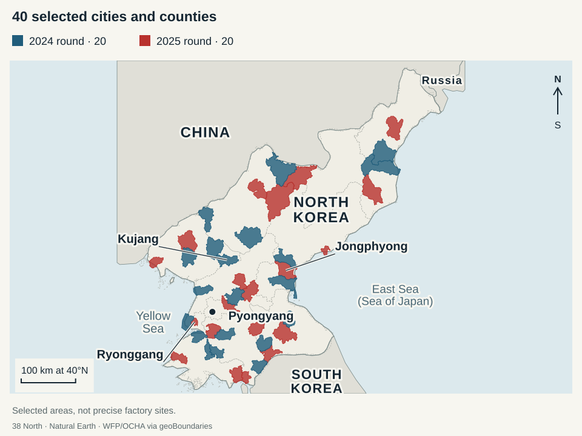
Policy, selected places and map sources
20×10: development beyond the capital.
The name is Regional Development 20×10 Policy: modern facilities in 20 cities and counties each year for ten years. Launched in January 2024, it began with factories for food, clothing and everyday household goods. KCNA’s policy account.
List the selected cities and counties
2024 round · 20 places
Songchon, Jaeryong, Sukchon, Unpha, Kyongsong, Unchon, Yonthan, Hamju, Onchon, Kujang, Usi, Kosan, Kusong, Orang, Jangphung, Kumya, Tongsin, Unsan, Ichon and Kim Hyong Jik.
2025 round · 20 places
Kangdong, Puryong, Taegwan, Sinyang, Rangnim, Hwangju, Jangyon, Pukchang, Janggang, Cholwon, Sinpho, Kim Jong Suk, Sepho, Koksan, Paechon, Kilju, Jongphyong, Yomju, Kaephung and Ryonggang.
Names follow 38 North’s published opening tables: 2024 round · 2025 round · source list. A round identifies the construction year; some 2024-round openings occurred in early 2025.
Province counts for the first two rounds
Where the first 40 locations were built.
Cities and counties within each province-level unit. Numbers count locations, not individual factories.
- 2024 round · 20 locations
- 2025 round · 20 locations
2024 · First 20
The first round’s factories opened from December 2024 through February 2025. Satellite analysis documented construction at the new production sites.
38 North’s first-year review →2025 · Another 20
The second round opened before year-end. Selected locations also received hospitals and leisure complexes.
38 North’s second-year review →2026 · Work expands
Another 20 regions began construction in early 2026. The program now includes healthcare and leisure facilities alongside factories.
38 North’s 2026 briefing, pp. 19–20 →A concrete example: Jongphyong’s new service complex includes a cinema, swimming pool, library, shops and a restaurant. These changes extend beyond Pyongyang’s skyline. December 2025 opening and photographs.
Keeping these facilities operating requires dependable power, materials and staff. 38 North’s September 2026 assessment.
38 North’s published geographic data · Map methods and sources. Select the map to view the full-size SVG.
Factories beyond the capital.
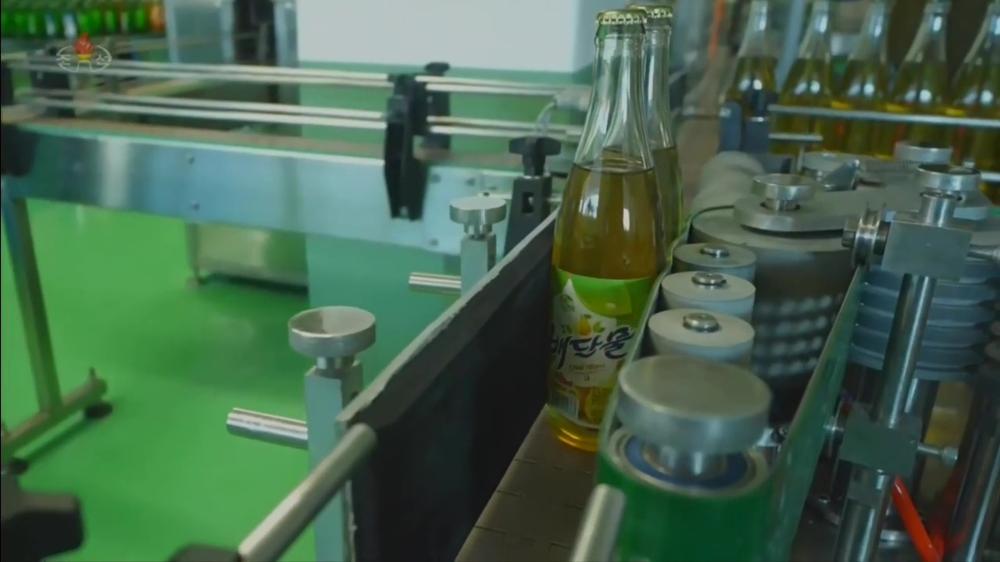
Food. Clothing. Household goods.
Factory photograph and operating conditions
KCTV footage, via 38 North’s June 2025 review. Exact filming date unspecified. These are state-media views of facilities; dependable power, materials and staff are needed to keep them operating. September 2026 assessment.
Factories—and services.

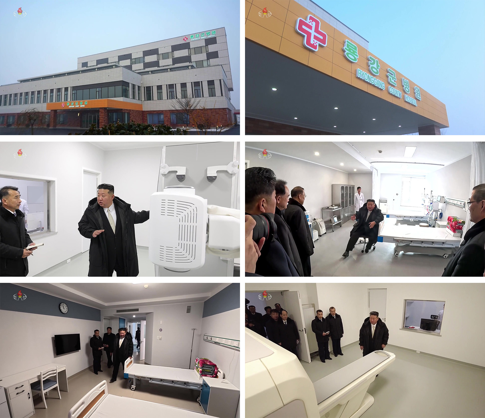

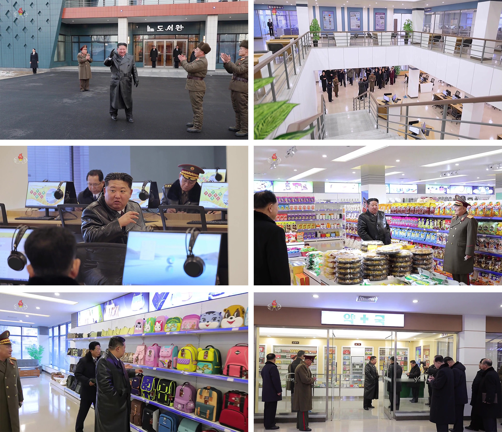
Facilities, dates and photographs
Ryonggang County Hospital: December 29, 2025 official visit. Jongphyong Service Center: December 24, 2025 opening. Complete KCTV montages retained, via 38 North’s January 2026 review. These photographs show facilities during official visits; they do not establish regular access, staffing or service quality.
A state market is not an oxymoron.

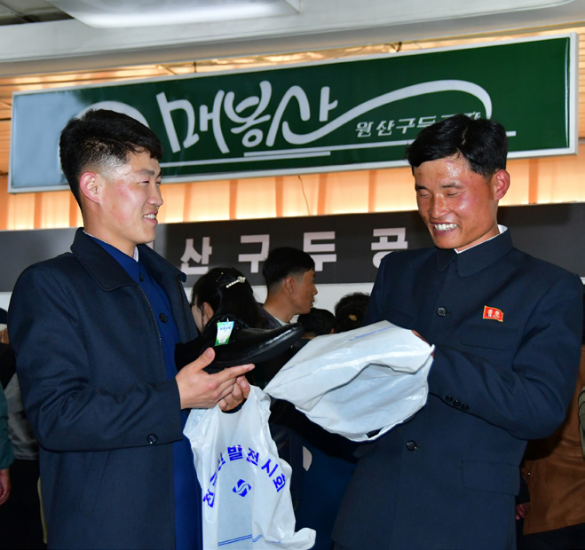

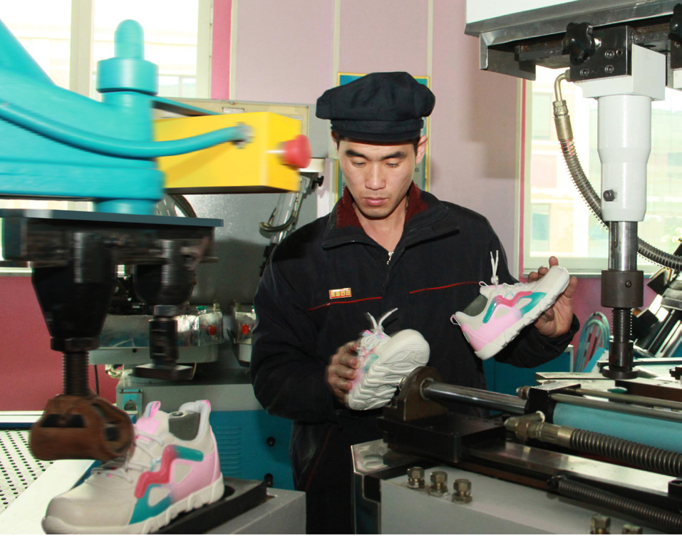
Brands and competition can develop within public ownership.
Image sources and brand notes
A state market is not an oxymoron.
Ownership and market activity are separate questions. State enterprises can develop brands, differentiate products, compete for customers and sell through shops. North Korea’s new regional factories are part of this commercial development.
DPRK economic journals describe enterprise initiative within public ownership and state guidance. 38 North’s translations of the management debate.

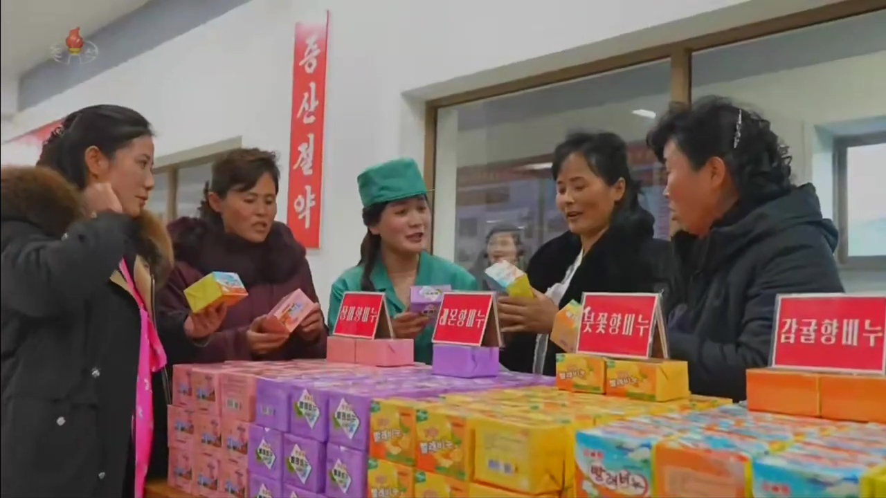

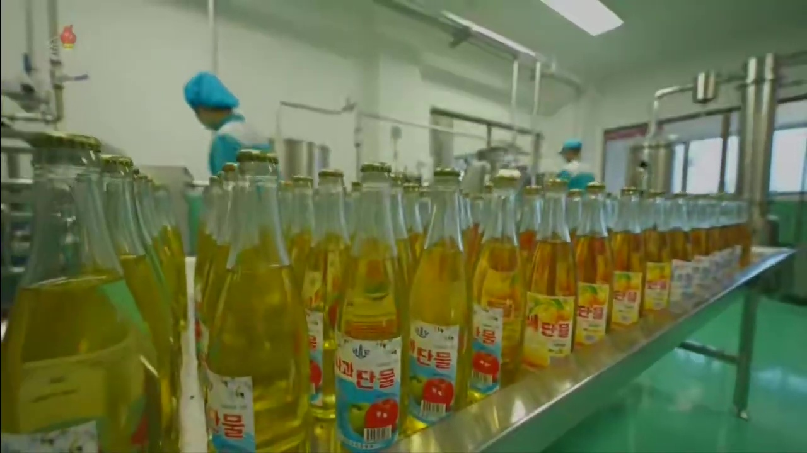
- New regional brands
- Naenara reported in September 2025 that the new regional factories’ own brands were reaching township and village shops. Examples included Songchon’s chestnut products and Jaeryong’s juices and soybean oil. Naenara, September 4, 2025.
- Competition within the state sector
- At Jangyon’s December 2025 factory opening, KCNA described locally branded beer and called for competition among regional factories to develop new products and improve quality. The state is organizing product competition within its own industrial program. KCNA, December 19, 2025.
- Recognizable brands
- Ryuwon footwear and Wonsan’s Maebongsan leather shoes appeared alongside Songdo at the April 2025 footwear exhibition. Reporting on Ryuwon describes designs guided by consumer demand and product assessments. These established brands show a longer history of commercial differentiation. Pyongyang Times, April 12, 2025 · April 19, 2025, p. 9.
Shops, factory showrooms and product exhibitions connect producers with buyers. Government-authorized vendor markets, often called jangmadang, are another channel: vendors can pay licenses and rents to state authorities. CSIS’s 2018 market study documents that arrangement.
Brands and markets belong in the account of North Korea’s development—even when ownership remains public or state-linked.
Maebongsan: The Pyongyang Times, page 7; native embedded JPEG object 85. Publication date; exhibition took place 3–10 April 2025. Exact photograph date not given. Credit: Pak Kwang Hun / The Pyongyang Times.
Ryuwon: The Pyongyang Times, page 9; photograph caption: A worker examines newly produced trainers. Publication date; exact photograph date not given. Credit: Won Tong Chol / The Pyongyang Times.
These include established brands; they are not all products of the new 20×10 program. State-media and official commercial photographs are selected views. They show product differentiation, not the ownership structure of every enterprise. Full image credits and provenance.
Cosmetics with recognizable names.


Image sources and brand notes
Unhasu: Choson Sinbo article; caption explicitly identifies Unhasu cosmetics. Article publication date. Exact photograph date not given; asset URL has a November 2024 upload path. Credit: Choson Sinbo.
Pomhyanggi: Choson Sinbo article; caption explicitly identifies a Pomhyanggi cosmetics set. Article publication date. Exact photograph date not given; asset URL has a February 2024 upload path. Credit: Choson Sinbo; image also bears a KCNA watermark.
These include established brands; they are not all products of the new 20×10 program. State-media and official commercial photographs are selected views. They show product differentiation, not the ownership structure of every enterprise. Full image credits and provenance.
Foods with a brand identity.


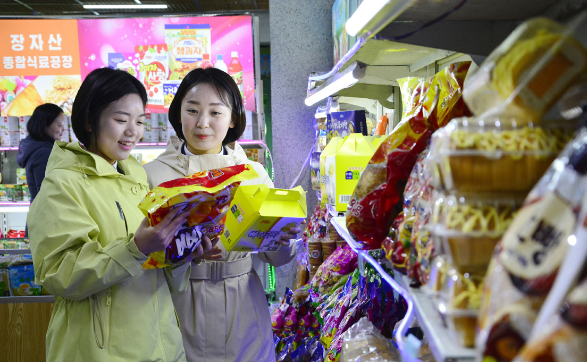
Image sources and brand notes
Paegunsan: The Pyongyang Times, page 7; native embedded JPEG object 81. Factory name 백운산종합식료공장 is legible in the image. Publication date; national foodstuff exhibition took place 31 March–7 April 2025. Exact photograph date not given. Credit: Ryu Kwang Hyok / The Pyongyang Times.
Jangjasan: The Pyongyang Times, page 7; native embedded JPEG object 79. Factory name 장자산종합식료공장 is legible on the poster. Publication date; national foodstuff exhibition took place 31 March–7 April 2025. Exact photograph date not given. Credit: Ryu Kwang Hyok / The Pyongyang Times.
These include established brands; they are not all products of the new 20×10 program. State-media and official commercial photographs are selected views. They show product differentiation, not the ownership structure of every enterprise. Full image credits and provenance.
A brand on a bottle. A brand on a street.

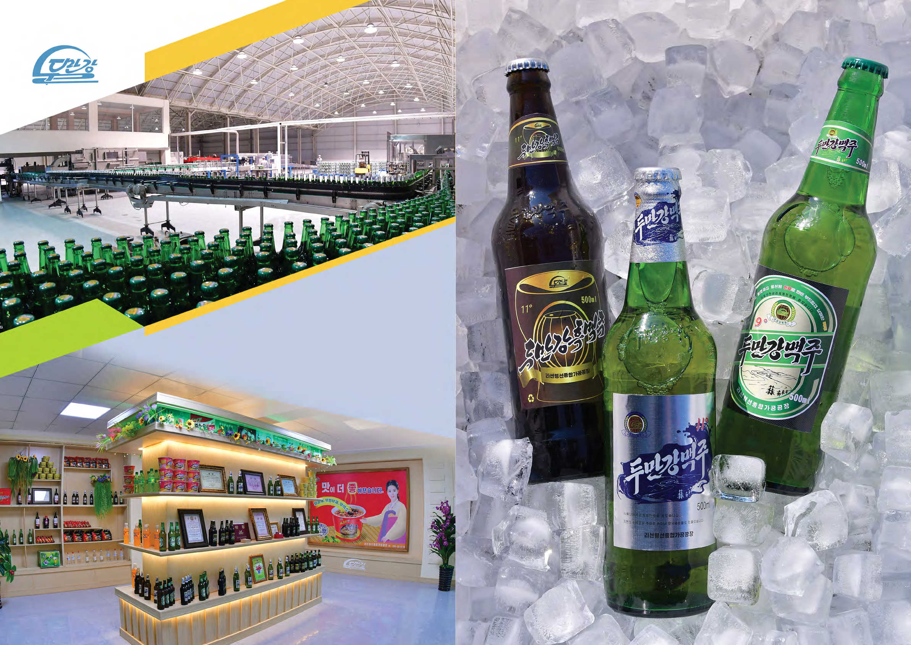

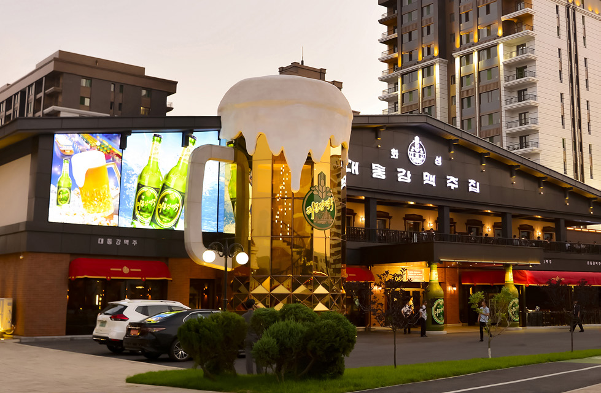
Image sources and brand notes
Tumangang: Foreign Trade of DPR Korea 2025 No.1, printed pages 24–25, PDF page 15; full embedded JPEG2000 image. Foreign Trade of DPR Korea, 2025 No.1. Exact publication day and photograph dates not given; archive URL places the upload in February 2025. Credit: Foreign Trade of DPR Korea / Foreign Languages Publishing House.
Taedonggang: The Pyongyang Times, page 6; photograph caption identifies Hwasong Taedonggang Beer House. Publication date; exact photograph date not given. Credit: The Pyongyang Times; individual photographer not credited on this page.
These include established brands; they are not all products of the new 20×10 program. State-media and official commercial photographs are selected views. They show product differentiation, not the ownership structure of every enterprise. Full image credits and provenance.
Choice, packaging, retail.
Products and image sources
KCTV stills, via 38 North’s June 2025 review. Kujang Daily Necessities Factory and Onchon Foodstuff Factory were part of the first 20×10 round. Brand growth also includes older enterprises, shown in the other frames.
Pyongyang has traffic jams.
Play here, plus shopping and student videos
Shopping, leisure—and traffic.
More cars, traffic jams and crowded parking are part of Pyongyang’s changing streets. This Reuters video makes the change visible.
See what a Chinese exchange student filmed.
Bilibili creator 偷吃一口口面包, who identifies as a Chinese exchange student, shares visits to Pyongyang’s shops and leisure spaces.
Hear a different student’s account: Yu Youlin (于又霖) discusses electronic payments, taxi apps, cafés and shopping during a May–December 2025 exchange. Chinese audio interview, December 28, 2025.
These capital-city and foreign-student views are selected observations. Upload dates are not necessarily filming dates. Bilibili may require sign-in after the preview.
Pyongyang up close: the construction photographs
These photographs establish visible buildings and ceremonies. They do not show maintenance, occupancy, allocation, or conditions outside the capital.
The apartment total is a North Korean state announcement, reported by Yonhap. It is evidence of the government's claims and priorities; it is not an independent assessment of housing quality or access.
The Bank of Korea uses South Korean prices and value-added ratios to estimate North Korean output. Its figures describe estimated production trends and cannot be used directly for international per-capita income or welfare comparisons.


Havana, Dhaka, Pyongyang: what the images can compare
The original preparation placed three capital-city photographs beside national GDP-per-capita estimates. Country averages are not city incomes, and photographs are not comparable economic samples. The images remain useful for comparing architecture and urban form.


Different photographers, locations, and dates shape these views. They cannot rank the wealth or well-being of the three cities.
Beyond the capital: flood recovery and remaining questions

The original argument also considered rural housing and greenhouse construction. Those projects matter to the question of state capacity beyond Pyongyang. Its annual rural-house totals, currency depreciation estimate, and statements about doubled food and fuel prices need dated sources before they can support a current assessment.
North Korea announced another stage of the Pyongyang housing project beginning on February 18, 2026. Continued construction adds to the question; it does not settle how resources are distributed. Yonhap's report.
GDP measures aggregate production. To understand North Korea, also ask what the state can mobilize, who receives those resources, and what daily life costs.